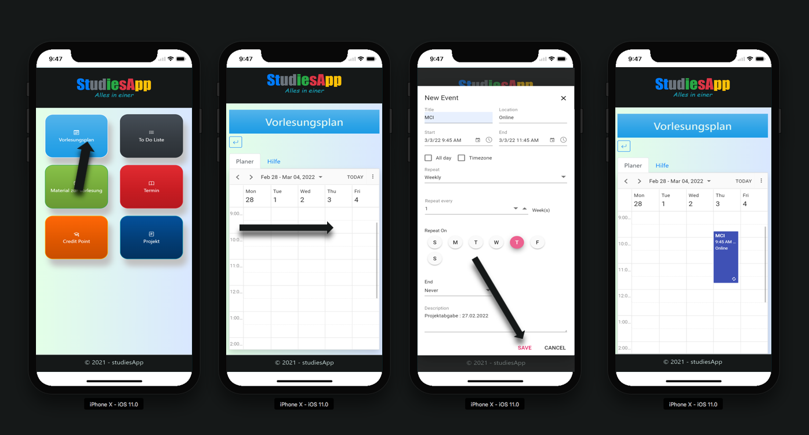
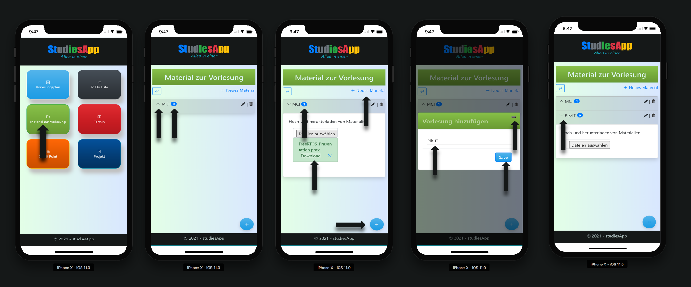
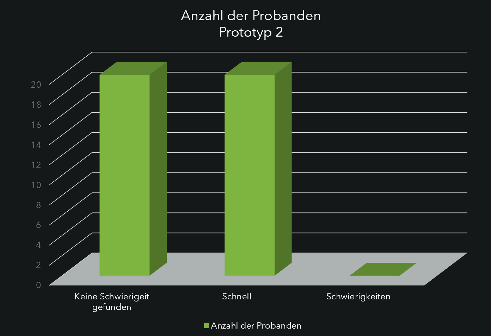
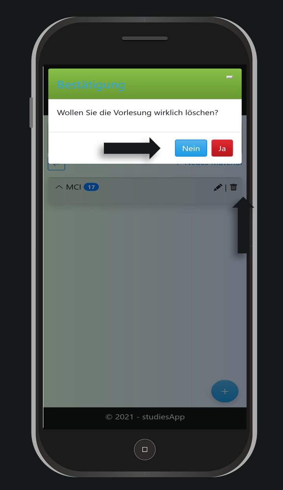
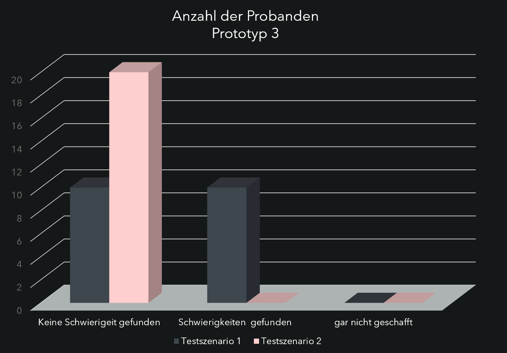

Einleitung
Zu Beginn des Semesters fällt es vielen Studierenden schwer den Überblick über Ihren Vorlesungsplan zu behalten und die Materialien zur Vorlesung ordentlich in den Computer oder das Handy einzuordnen.
Das Ziel dieses Projekts ist die Entwicklung einer Web- und Mobilanwendung, die Lösungen für Studierende bieten kann.
Präsentation der Anwendung
Nutzergruppe
StudiesApp wurde in erster Linie für Studierende entwickelt, kann aber auch von Schüler-innen verwendet werden. Sie hat die Besonderheit, dass sie sechs Services bietet, die für Studierende sehr nützlich sind.
Services
Mit StudiesApp können Sie:
-
Ihre wöchentlichen Vorlesungen planen, indem Sie den Namen der Vorlesung, den Ort (Online oder im Präsenz) und Kommentare wie Klausur- oder Abgabetermin eintragen.
-
Für jeden Ihrer Vorlesungen einen Ordner erstellen, in den Sie Materialien der entsprechenden Vorlesung hoch- und herunterladen können.
-
Einen Überblick über Ihre Studienleistungen (Credit-Points), indem Sie Ihre Module und die erreichten Noten in eine Tabelle eintragen.
-
Ihre To-do-Listen erstellen und die Ausführungsprioritäten hinzufügen.
-
Ihre Termine hinzufügen.
-
Ein neues Projekt hinzufügen,in dem Sie Ihre Aufgaben definieren und den Fortschritt Ihrer Arbeit verfolgen. Sie haben auch die Möglichkeit, Mitglieder zu Ihren Projekten und deren Aufgaben hinzuzufügen.
Umsetzung


 StudiesApp wurde hauptsächlich mit Angular und Bootstrap Frameworks entwickelt und serverseitig mit Java Spring, das lediglich dazu diente ein API-REST Service zum Hoch- und Herunterladen von Dateien auf dem Computer oder dem
Telefon zu erstellen. Die Benutzerdaten werden vorübergehend in sogenannten Mock-Data gespeichert, da dieses Projekt nur dem Zweck dient die Mensch-Maschine-Interaktivität zu betonen.
StudiesApp wurde hauptsächlich mit Angular und Bootstrap Frameworks entwickelt und serverseitig mit Java Spring, das lediglich dazu diente ein API-REST Service zum Hoch- und Herunterladen von Dateien auf dem Computer oder dem
Telefon zu erstellen. Die Benutzerdaten werden vorübergehend in sogenannten Mock-Data gespeichert, da dieses Projekt nur dem Zweck dient die Mensch-Maschine-Interaktivität zu betonen.
Die Implementierung des Projekts ist nicht vollständig, da die Termin- und Projektfunktionen noch fehlen.
Interaktiver Prototyp
Fokus
Zur Durchführung des Nutzertests wurde der Fokus auf drei Funktionalitäten gelegt. Der Vorlesungsplan, das Material zur Vorlesung und die To-do-Liste.
Skizze der zentralen Interaktion
Das erhaltene Ergebnis im Diagramm dargestellt:
Zunächst wurde eine Skizze angefertigt, um die Meinungen potenzieller Nutzer über das Design und die für die Anwendung gewählten Funktionen einzuholen. Anhand einer Umfrage konnten sich die Nutzer dazu äußern, welche Funktionen der App sie gerne mit dabei
haben würden.
Die Umfrage wurde per E-Mail an Studierende der Hochschule Bremen verschickt und rund 20 Studierende haben an der Umfrage teilgenommen. So wurde der Fokus auf die drei Funktionen
mit den meisten positiven Rückmeldung gelegt.
Beschreibung der Prototypen
Prototyp 1
Der Nutzer öffnet die StudiesApp und möchte seine Lehrveranstaltungen in den Kalender eintragen. Dazu muss er auf die Schaltfläche „Vorlesungsplan“ klicken. Darin befindet sich ein Kalender, welchen der Nutzer mit Inhalt füllen kann. Um diesen zu füllen, muss der Nutzer auf das Feld klicken, das dem Tag und der Uhrzeit des Vorlesungsbeginns entspricht. Es erscheint ein Fenster, in dem er die Möglichkeit hat, die entsprechenden Daten einzugeben und schließlich zu speichern. Außerdem gibt es in jedem Prototypen die Funktionen Löschen und Bearbeiten von Daten.
Prototyp 2
Nachdem der Nutzer eine Vorlesung im Planer (Prototyp 1) eingetragen hat, wird diese automatisch auf den Prototyp 2 übertragen, sodass der Nutzer die Vorlesungsmaterialien zu jederzeit hoch- und herunterladen kann. Außerdem hat er die Möglichkeit, einen Kurs direkt im Fenster „Material zur Vorlesung“ hinzuzufügen. Dies ist für Studierende gedacht, die z.B. ein Modul wiederholen und nicht an der Vorlesung teilnehmen müssen.
Prototyp 3
Prototyp 3 ist der von allen Befragten am meisten geschätzte Prototyp. Wenn der Benutzer auf die Schaltfläche „To-do-Liste“ klickt, hat er die Möglichkeit einen Titel oder den Namen der Liste hinzuzufügen. Wenn der Nutzer auf die erstellte To-do-Liste
klickt, wird eine neue Seite angezeigt. Dort können Aufgaben mit einer Prioritätsstufe hinzugefügt werden. Hat der Nutzer die Aufgabe erledigt, hat er die Möglichkeit die Aufgabe durchzustreichen.
Ganz wichtig ist es hier zu wissen, dass eine bereits erledigte Aufgabe nicht mehr als Aufgabe gezählt wird.
Interaktions-Aufgaben
Um einen Nutzertest durchzuführen, musste jeder Proband eine bestimmte Aufgabe ausführen, wie zum Beispiel:
Prototype 1:
-
Tragen Sie den folgenden Satz in den Vorlesungsplan ein:
„jeden Donnerstag von 9:45 bis 11:15 Uhr habe ich MCI. Die Vorlesung findet online statt und die Abgabe des Semesterprojekts ist der 27.02.2022“.
Prototype 2:
-
Fügen Sie eine Vorlesung hinzu. Laden Sie die dazu gehörigen Materialien hoch, bearbeitenund löschen Sie diese anschließend.
-
Fügen Sie eine neue Veranstaltung hinzu. Laden Sie eine Datei unabhängig von Format und Größe hoch und laden Sie schließlich dieselbe Datei herunter.
Prototype 3:
-
Fügen Sie mehrere Titel in die To-do-Liste ein und testen Sie das Suchfeld.
-
Fügen Sie eine oder mehrere Aufgaben zu einer Liste hinzu und zeigen Sie dann an, dass Sie eine bestimmte Aufgabe abgeschlossen haben.
Evaluation
Es waren etwa 20 Studierende, die am Nutzertest teilgenommen haben. Die Testergebnisse lauten wie folgt:
Prototyp 1
Von den 20 Probanden, die den Prototyp 1 getestet haben:
- 12 Probanden haben keine Schwierigkeiten gefunden und konnten den Test schnell durchführen.
- 4 Probanden hatten Schwierigkeiten aber mit der Zeit gelang
es ihnen, den Test gut auszuführen.
- 3 Probanden haben es nicht geschafft den Test auszuführen.
Es lag daran, dass viele nicht wussten, wie man eine Vorlesung angibt, damit die sich wöchentlich wiederholt. Um dieses Problem zu lösen, wurde eine Hilfefunktion
eingebaut.
Prototyp 2
 
Testszenario 1: „Fügen Sie eine neue Veranstaltung hinzu. Laden Sie eine Datei unabhängig von Format und Größe hoch und laden Sie schließlich dieselbe Datei herunter“.
Dieser Test wurde einstimmig gut durchgeführt. Der Download war jedoch schnell und sie konnten problemlos von 10 bis 25 PDF- und Zip-Dateien hoch- und herunterladen.
Testszenario 2: „Fügen Sie mehrere Vorlesungen hinzu, laden Sie die Materialien hoch, bearbeiten und löschen Sie sie dann“.
Auch im Testszenario 2 hatten die Probanden kaum Schwierigkeiten gefunden, eine Vorlesung und ihre Materialien hinzuzufügen, zu bearbeiten oder zu entfernen. Stattdessen gaben sie zwei Verbesserungsvorschläge an.
*Wenn ein Nutzer eine Vorlesung entfernen möchte, sollte er aufgefordert werden, seine Aktion zu bestätigen. Dann stellen Sie sich vor, der Nutzer erstellt eine neue Veranstaltung und gibt 20 Materialien ein. Anschließend
löscht er diese aus Versehen, weshalb die dazugehörigen Materialien auch gelöscht werden. Dadurch muss der Nutzer den Vorgang von Anfang an erneut starten.
Ein weiterer Vorschlag bezog sich auf die verwendete Sprache, denn viele Probanden haben festgestellt, dass auf einer Seite deutsch und englisch zusammen verwendet wurde.
Prototyp 3

Testszenario 1: „Fügen Sie mehrere Titel in die To-Do-Liste ein und testen Sie das Suchfeld“.
In diesem Testszenario werden Nutzerbewertungen gleichmäßig verteil. Diejenigen, die Schwierigkeiten mit der Suchfunktion hatten,
hatten die Erwartung, dass das Suchfeld auch rekursiv sucht. Das heißt, wenn ein Buchstabe entfernt wird, werden keinen entsprechenden Vorschläge mehr angezeigt.